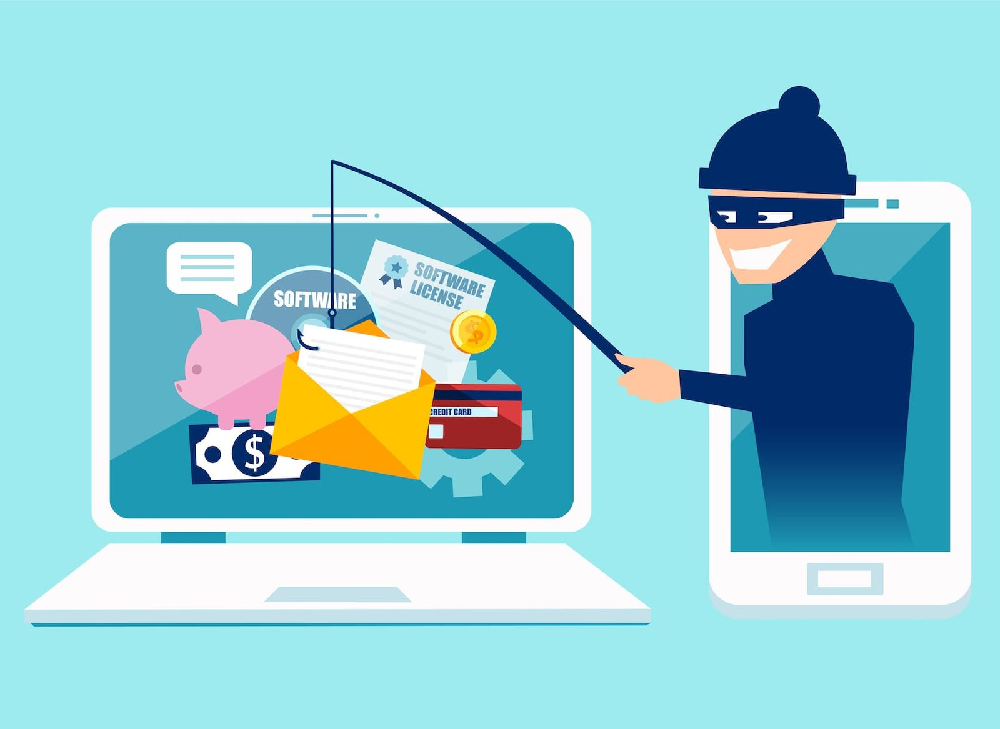

Phishing (hameçonnage)
Le phishing est une technique frauduleuse où un attaquant se fait passer pour un organisme de confiance afin d’obtenir vos données (identifiants, cartes bancaires, etc.).
Reconnaître vite un phishing
- Adresse d’expéditeur suspecte ou différente du domaine officiel.
- Urgence artificielle : « votre compte va être bloqué », « paiement en retard »…
- Liens qui redirigent vers un site dont l’URL n’est pas officielle.
- Fautes de grammaire, mise en page approximative, pièces jointes inattendues.

Exemple typique
Un e-mail (ou SMS) imite votre banque et vous demande de « vérifier vos informations » via un lien. La page est une copie du vrai site et vole vos identifiants.
Que faire si vous recevez un message suspect ?
- Ne cliquez pas et n’ouvrez pas les pièces jointes.
- Vérifiez l’expéditeur (domaine, fautes, incohérences).
- Passez la souris sur les liens pour voir l’URL réelle (sans cliquer).
- Connectez-vous au site officiel par votre favori, jamais via le message.
- Supprimez le message si vous confirmez la fraude.
J’ai cliqué / saisi mes identifiants, que faire ?
- Changez immédiatement le mot de passe du compte concerné (et de tout autre compte où il est réutilisé).
- Activez la double authentification (2FA) si possible.
- Prévenez votre banque en cas d’informations bancaires saisies, et surveillez vos relevés.
- Faites un signalement (voir ci-dessous) et conservez des preuves (captures).
Signaler un phishing
E-mail Transférez à signal-spam.fr ou utilisez le bouton « Signaler » de votre webmail.
SMS Transférez le SMS au 33700 (service officiel de signalement des spams SMS).
Site frauduleux Ne le visitez pas ; vous pouvez le signaler via les plateformes officielles (ANSSI / Phishing Initiative).
SMS Transférez le SMS au 33700 (service officiel de signalement des spams SMS).
Site frauduleux Ne le visitez pas ; vous pouvez le signaler via les plateformes officielles (ANSSI / Phishing Initiative).
Prévenir le phishing au quotidien
2FA partout
Activez la double authentification sur vos comptes sensibles.
Mots de passe uniques
Utilisez un gestionnaire de mots de passe et des mots de passe différents.
Mises à jour
Maintenez navigateur, OS, antivirus à jour.
Vigilance
Ne donnez jamais d’infos par e-mail/SMS ; vérifiez l’URL, le cadenas, le domaine.